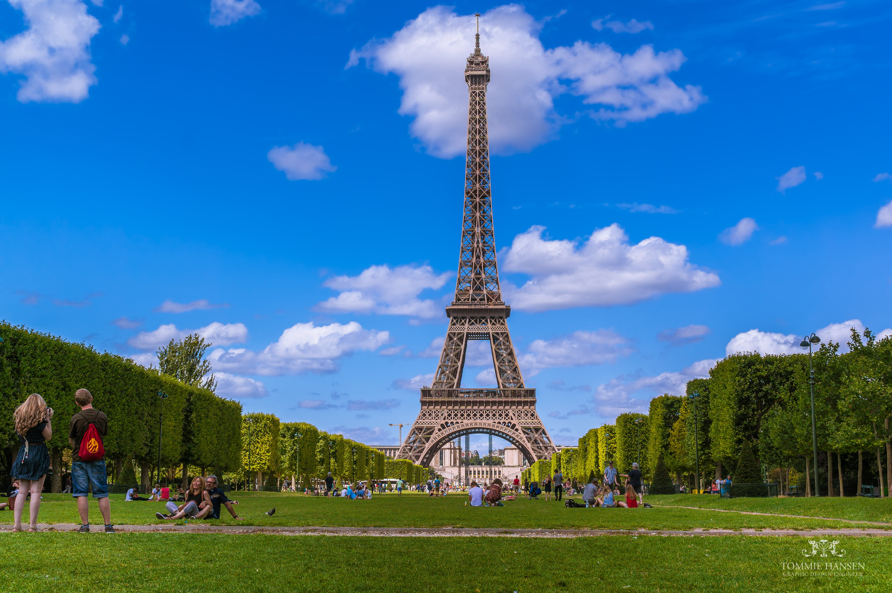
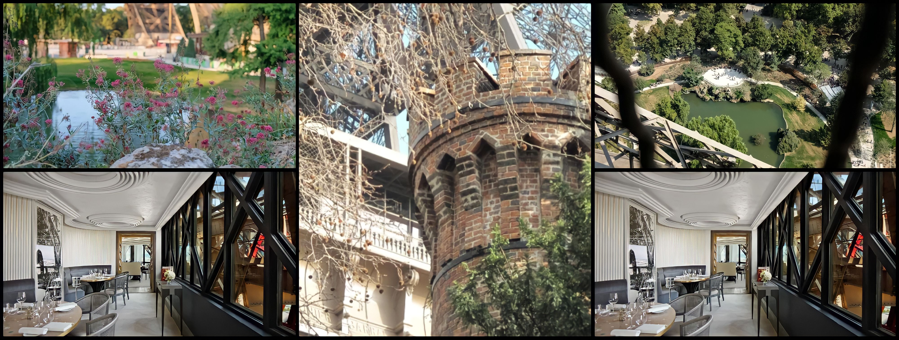

|  |
Eiffel Tower Gardens |
☼ The Gardens around the Eiffel tower is home to various flowers and canopy trees. ☼ Enjoy the natural carpet of soft green grasses, making the Garden a perfect spot for picnics. ☼ Visitors must walk through these gardens to reach the Esplanade and ascend the Eiffel Tower. ☼ The best part is you don’t need to buy a ticket to stroll around the gardens. It’s absolutely free! ☼ The gardens also make the best spot for photography.The original Garden had two promenades, ponds, a Grotto with waterfalls, and a Belvedere. ☼ Jules Vacherot designed it for the 1889 world fair to provide a scenic entry to the tower. |
Top Attractions |
☼ Holding significant historical values and stories of their own, they sure are a must-see site near the tower. |
...............01. The Belvederes .........................02. The Cave ......................................03. The Chimney .................................................04. The Iron Lady’s Pond .............................................................05. Restaurants and shops |
|  |